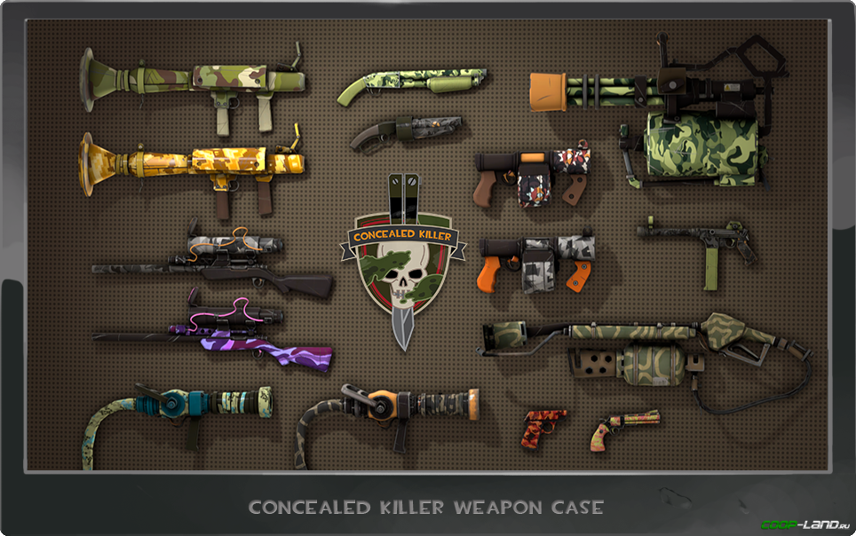

Какие существуют тип или редкость оружия
В Тим Фортрес есть множество типов стандартного оружия, отличаеться оно от стандартного только лиш крутезной и стоимостью. Чем выше редкость, тем выше цена и качество. Сейчас я разкажу обо всех качествах оружия. И начну я с самого дешового, к самого дорогомую.
Стандартное - это качество оружия появляеться с самого начала игры. Его нельзя ни продать, ни обменять, ни перековать. Оно нужно лиш для старта игры
Уникальные предметы — это качество предметов, приобретенных в магазине Манн Ко, выпавших во время игры, полученных за выполнение достижений или cкованных. Таким образом, уникальное качество - качество для предмета по умолчанию и не имеющее никакого префикса за исключением того, что некоторые предметы имеют префикс «The» перед их названием.
Предметы старой закалки — это качество, которым по большей части обладают уникальные предметы, полученные до выхода обновления «Манн-кономика». Качество было добавлено для повышения ценности таких предметов при их обмене, а также для разнообразия в области экономики игры.
Предметы высшей пробы — это качество предметов, которыми награждают игроков за участие во внутриигровых событиях, рекламных акциях и турнирах, выделяя их от предметов полученных другим путем, например ковкой или через систему случайного выпадения. Впервые предметы высшей пробы появились в рекламной акции для игры RIFT. Аксессуары высшей пробы можно использовать со Странноделом, но цвет предмета в рюкзаке игрока будет по прежнему отображаться как предмета высшей пробы, добавив лишь в название ранг. Это позволяет создавать предмет с двумя качествами одновременно.
Предметы странного типа — это качество предмета, которым могут обладать только оружие, аксессуары и насмешки. Оружие странного типа отслеживает совершённые игроком убийства или другие события, такие как помощь в убийстве (см. Заметки) и записывает их количество в атрибут предмета, который виден всем игрокам. Аксессуары странного типа, в свою очередь, отслеживают количество набранных игроком очков. Предметам странного типа присваиваются ранги, которые указываются в конце их названия. Каждый раз, когда предмет игрока получает новый ранг, об этом объявляется всем игрокам на сервере сообщением в чате; а у игрока, которому принадлежит предмет, появляется уведомление во всплывающем окне.
Предметы необычного типа — это качество предметов, обладая которым аксессуары, насмешки и оружие могут иметь различные необычные эффекты. Такие предметы считаются одними из самых редчайших предметов в Team Fortress 2. На данный момент существует 513 аксессуара, которые могут иметь один из 148 возможных эффектов, а также 58 насмешки с 51 разными эффектами и 45 видов оружия с 3 эффектами. Способов получить предмет необычного типа не так много, основной из них — это открывание ящиков и кейсов. Шанс выпадения предмета необычного типа из ящика составляет 1%.[1] Предметы необычного типа можно получить из любого ящика или кейса, однако эффекты будут зависеть от тиража открываемого контейнера. Наборы эффектов также зовут «поколениями»
Предметы призрачного вида — это качество предметов, которые можно использовать лишь во время Хеллуина или Полнолуния.
Предметы из коллекции — это качество предметов, получаемое после использования специальных Химических наборов, представленных 12 ноября 2013 года. Химические наборы превращают 200 уникальных копий предмета в один предмет из коллекции.
Предметы ручной сборки — это качество предметов, которыми Valve награждает авторов предметов для Team Fortress 2, опубликовавших свою работу в Мастерской Steam или на старой странице вклада на официальном сайте TF2. Так же как и предметы члена сообщества, предметы ручной сборки обладают эффектом «Сияние от пользы обществу» и имеют дополнительное описание: «Это создано мной!»
Предметы сотрудников Valve — альтернативные версии обычного оружия, которые даются сотрудникам компании Valve. Обычно они имеют эффект Летающих частиц. Из-за того, что это оружие разработчиков, оно наделено специальными свойствами, отображаемыми в рюкзаке, однако они не причастны к настоящим свойствам оружия разработчиков. Примером таких предметов является Ракетомет Робина Волкера (английский).